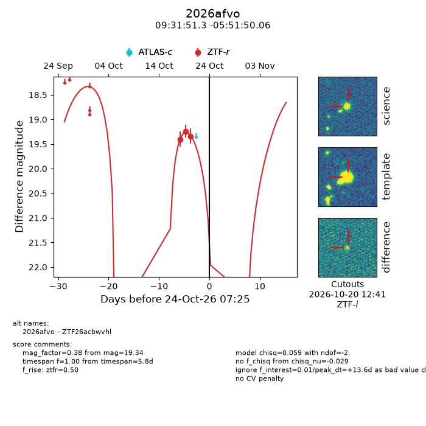
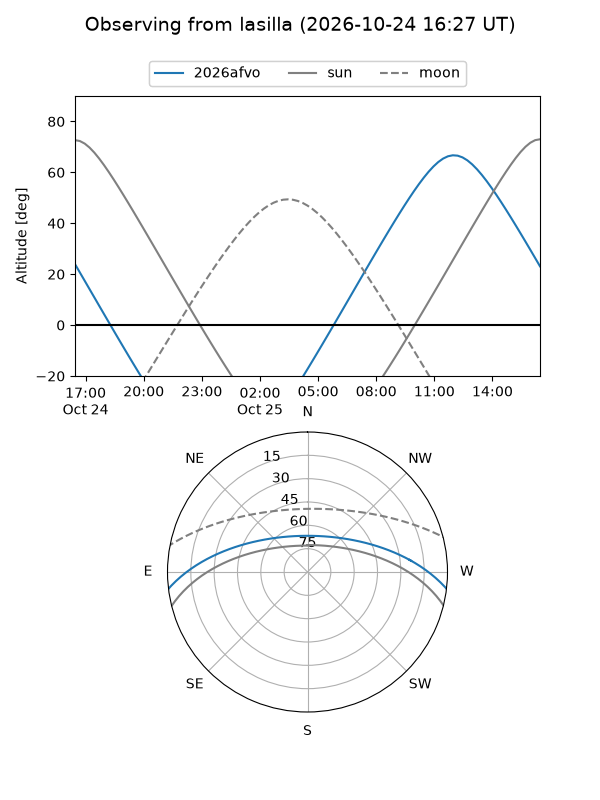
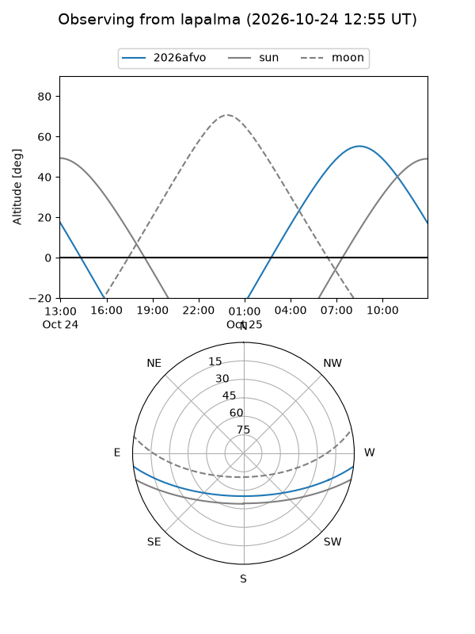
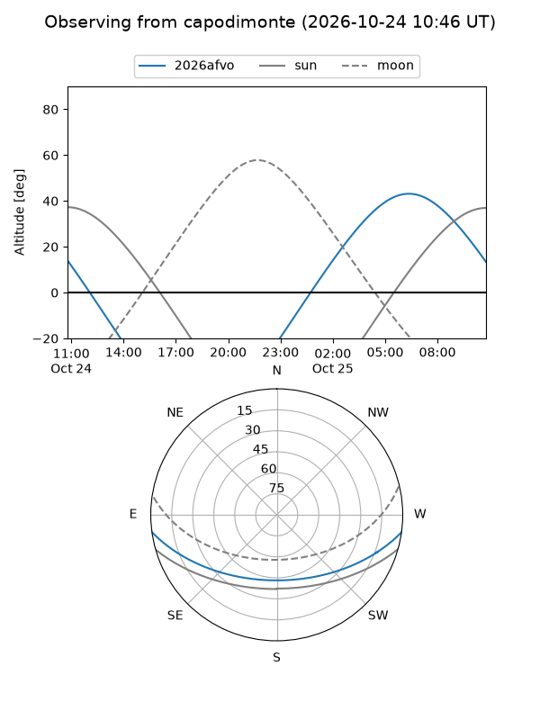
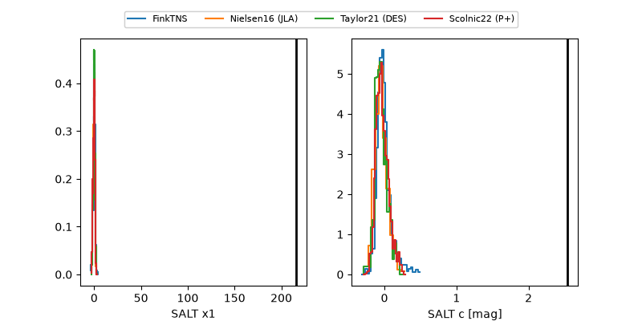

2026afvo
Target 2026afvo at 2026-10-24 19:26
Aliases and brokers:
FINK-ZTF: ztf.fink-portal.org/ZTF26acbwvhl
Lasair-ZTF: lasair-ztf.lsst.ac.uk/objects/ZTF26acbwvhl
ALeRCE-ZTF: alerce.online/object/ZTF26acbwvhl
YSE-PZ: ziggy.ucolick.org/yse/transient_detail/2026afvo
TNS name: wis-tns.org/object/2026afvo
Direct TNS query: direct search
alt names
ZTF26acbwvhl (ztf,fink_ztf)
2026afvo (tns,yse)
Coordinates:
equatorial (ra, dec) = 142.9637,-5.86390
equatorial (HMS+DMS) = 09:31:51.30,-05:51:50.06
galactic (l, b) = (239.6588,+31.58260)
Flags:
peak dt: +14.1
Photometry:
last ztfr=19.34
3 ztfr detections
Lightcurve

Visibility



Additional plots
